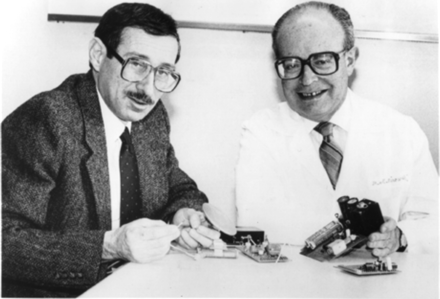
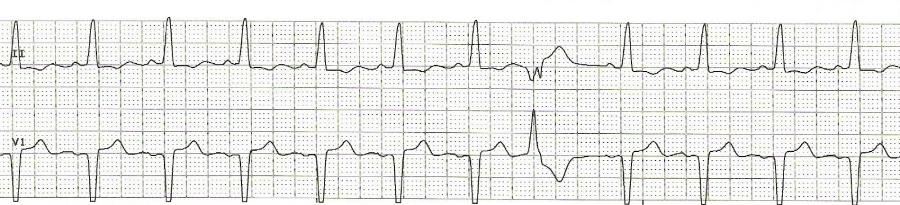
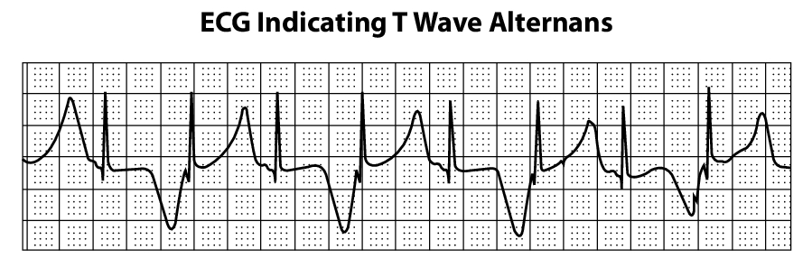

Sudden Cardiac Death - In search of an electrical signature
Raja Selvaraj
Introduction
Sudden cardiac death
SCD - what is it and why is it important
- Unexpected, natural death from cardiac causes (< 24 h)
- Significant contributor to all deaths in the West
- About 10% of all deaths in the community
Rao BH, Sastry BK, Chugh SS, Kalavakolanu S, et al. Contribution of sudden cardiac death to total mortality in India - a population based study. Int J Cardiol. 2012; 154:163-7
SCD - Mechanism
Causes
Myocardial infarction
Myocardial infarction (Heart attack)
Invisible problem - 100 patients after MI
At one year - Angina -> PCI
Angina -> CABG
Worsen -> Death
Follow up - Medically managed

Sudden death
AICD - the revolution
The history
Drugs for prevention of sudden death
CAST
EMIAT
Michel Mirowski

History of development
- Young Polish Cardiologist
- Trained in France
- Joined Professor Harry Heller in Israel in 1963
Professor Harry Heller
- Recurrent ventricular arrhythmias
- DC cardioversion
- Dies suddenly (1966)
Idea for ICD
- Early defibrillation can be life saving
- Implanted device that can defibrillate ?
- Scepticism
- Moved to USA
Evolution
Early results - 1969
First report - 1970s
Technical improvements
- Miniaturization
- Refinements in shock waveform
- Smaller, transvenous electrodes
- Implantation today a simple procedure
Evolution
ICD today
Trials, patient groups
Anthony Van Loo
Subcutaneous ICD
The End ?
Or, is it just the beginning?
Identifying patients at high risk
Lifesavers, but carry risks too
EF and sudden death
Solomon et al. Circulation 2005;112:3738-3744
Why not sufficient?
- Cost of device implantation
- Only 15-20% of patients with CAD will have sudden death
- LV ejection fraction is a marker of risk
- But only one component of a probably multifactorial risk profile
- NNT about 15 over 3 years with EF alone
- Many deaths in patients with EF > 30%
ECG
ECG signature
- Electrocardiogram is a representation of the electrical activity of the heart
- Encodes the rhythm, depolarization, repolarization
- Should carry information regarding risk of sudden death
Premature Ventricular beats

- Beats that originate in the ventricles
More abnormal beats - worse the outcome
Heart rate variability (HRV)
HRV - Outcomes
Kleiger RE, Miller JP, Bigger JT Jr, Moss AJ. Decreased heart rate variability and its association with increased mortality after acute myocardial infarction. Am J Cardiol. 1987 Feb 1;59(4):256-62.
Signal averaged ECG (SAECG)
- 200 to 300 beats averaged and amplified
- High pass filter
- Low amplitude, high frequency signal in last part of filtered QRS
SAECG
SAECG
SAECG
- High negative predictive value
Kuchar DL, Thorburn CW, Sammel NL. Late potentials detected after myocardial infarction: natural history and prognostic significance. Circulation. 1986 Dec;74(6):1280-9
QT dispersion
T wave alternans
- Change in morphology of T waves on alternate beats
- Heralds onset of dangerous arrhythmias
TWA - Macroscopic

Microscopic T wave alternans
Chauhan VS, Selvaraj RJ. Utility of microvolt T-wave alternans to predict sudden cardiac death in patients with cardiomyopathy. Curr Opin Cardiol. 2007 Jan;22(1):25-32
Microvolt T wave alternans
- Can be detected in some patients
- Elevated heart rates (exercise / pacing)
- Associated with risk of sudden death
Genesis of alternans
- Alternans of cellular action potential duration and calcium levels
- Alternans can be detected locally in heart muscle
- Heterogeneity of alternans in the heart at different regions
Selvaraj RJ, Picton P, Nanthakumar K, Mak S, Chauhan VS. Endocardial and epicardial repolarization alternans in human cardiomyopathy: evidence for spatiotemporal heterogeneity and correlation with body surface T-wave alternans. J Am Coll Cardiol. 2007 Jan 23;49(3):338-46
Calcium and pressure alternans
Selvaraj RJ, Suszko A, Subramanian A, Mak S, Wainstein R, Chauhan VS. Microscopic systolic pressure alternans in human cardiomyopathy: noninvasive evaluation of a novel risk marker and correlation with microvolt T-wave alternans. Heart Rhythm. 2011 Feb;8(2):236-43.
APD restitution
Dynamic instability
Restitution slopes
Selvaraj RJ, Picton P, Nanthakumar K, Chauhan VS. Steeper restitution slopes across right ventricular endocardium in patients with cardiomyopathy at high risk of ventricular arrhythmias. Am J Physiol Heart Circ Physiol. 2007 Mar;292(3):H1262-8
TWA in clinical practice
- Commercial systems
- Promising initial results
- Not consistent across studies
Better measurement methods? - Noise / other methods
- Selvaraj RJ, Chauhan VS. Effect of noise on T-wave alternans measurement in ambulatory ECGs using modified moving average versus spectral method. Pacing Clin Electrophysiol. 2009 May;32(5):632-41
- Ghoraani B, Krishnan S, Selvaraj RJ, Chauhan VS. Adaptive time-frequency matrix features for T wave alternans analysis. Conf Proc IEEE Eng Med Biol Soc.2009;2009:39-42
- Ghoraani B, Krishnan S, Selvaraj RJ, Chauhan VS. T wave alternans evaluation using adaptive time-frequency signal analysis and non-negative matrix factorization. Med Eng Phys. 2011 Jul;33(6):700-11.
Body surface mapping
Selvaraj RJ, Suszko AM, Subramanian A, Sivananthan D, Hill A, Nanthakumar K, Chauhan VS. Body surface projection of action potential duration alternans: a combined clinical-modeling study with implications for improving T-wave alternans detection. Heart Rhythm. 2009 Aug;6(8):1211-9.
Heart Rate Turbulence (HRT)
- Changes in beat-to-beat intervals following premature beats
- Marker of autonomic function
HRT
HRT
Georg Schmidt, Marek Malik, Petra Barthel, Raphael Schneider, Kurt Ulm, Linda Rolnitzky, A John Camm, J Thomas Bigger, Albert Schömig, Heart-rate turbulence after ventricular premature beats as a predictor of mortality after acute myocardial infarction, In The Lancet, Volume 353, Issue 9162, 1999, Pages 1390-1396
HRT good
HRT bad
QRS fractionation
QRS fractionation - Meta analysis
Rosengarten JA, Scott PA, Morgan JM. Fragmented QRS for the prediction of sudden cardiac death: a meta-analysis. Europace. 2015 Jun;17(6):969-77.
ECG markers of risk - What is the current status?
- Many markers studied
- Measures of autonomic function
- Heart rate variability
- Heart rate turbulence
- Measures of abnormal depolarization
- Fractionated QRS
- Signal averaged ECG - Late potentials
- Measures of abnormal repolarization
- QT dispersion
- T wave alternans
How are we placed to study these?
- Magnitude of problem in India
- Most patients dont get ICDs - Surrogate vs true outcomes
- Datasets / Modeling tools
Study in JIPMER
- 58 patients
- LV dysfunction post MI (LVEF < 40%)
- Multiple parameters measured at baseline
- Followed up for 2 years
Outcomes
- Mean age 46.8 yrs
- 7/58 died suddenly
- PVCs, HRV, TWA, HRT were not predictive
- EF was strongest predictor
The future
- New markers ?
- Better measurement methods
- Combine markers